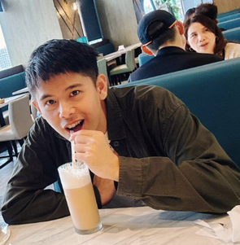

研究筆記 · Infrastructure, Mobility & Heritage
當基礎設施退場、遺產顯影，
城市如何被重新賦義。
國立台灣大學建築與城鄉研究所碩士生，關注基礎設施的廢棄、再生與其中蘊含的文化與空間正義問題。透過田野與民族誌方法，追蹤物件、空間與制度如何被重新賦予意義。
About Me
關於我

出生於桃園，求學於農業經濟學，但真正的養分卻常來自社會學、人類學與人文思想，大學時期便心嚮往城鄉所，從大二便寄生於不同城鄉所課堂。一路走來，我始終在身份的縫隙裡摸索：既是離鄉背井的學子，也是渴望轉向社會學與空間權力研究的追尋者。這種不確定與游移，也讓我更敏感於邊界、空間與制度的張力。
我屬於一個矛盾的世代：在快速都市化與全球化的浪潮中成長，既見過疫情時代，也目睹了城市基礎設施帶來的排擠與分化。前往部落田野所見的土地與人情，使我難以忽視發展背後的代價；而都市的繁華與困境，以及大二時前往萬華進行社區工作的生命經驗，則推動我不斷追問居住正義與空間的社會性。
研究上，我從退役基礎設施的物質性出發——共享單車如何在城鄉之間流動、被丟棄又被重新賦義，逐漸走向對文化資產與遺產政治的關注。桃園火車站下挖出的清代鐵道與史前遺址，讓我看見基礎建設的「進步敘事」如何輕易掩埋掉土地的時間厚度，也讓我更確信：遺產不是凝固的過去，而是持續被爭奪、被生成的政治過程。這些關懷最終指向同一個問題——當代城市如何在發展的焦慮裡，重新學習與自己的歷史共處。
平日裡，我閱讀與思考，這些閱讀滋養了我，使我在學術與生活中保持批判，也保持柔軟。未來，我期待持續在土地、發展與空間之間尋找對話，並用書寫留下我世代的思考痕跡。
Research Interests
- Critical Heritage Studies
- Infrastructure Studies
- Urban Development and Housing Justice
- Development Sociology
- Indigenous Studies
- Qualitative Research and Ethnography
Contact
- Email: r14544007@ntu.edu.tw
- Affiliation: 國立臺灣大學建築與城鄉研究所
- Location: 臺灣，台北
Explore